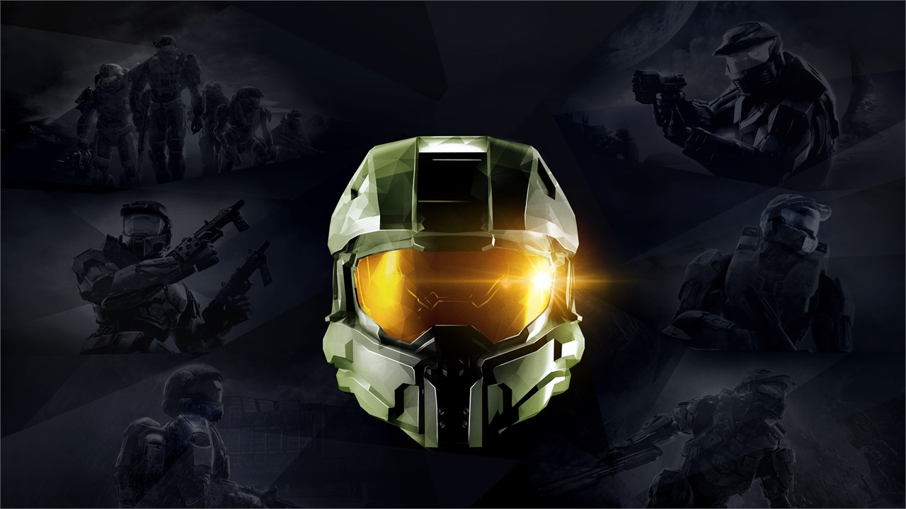

Halo 5: Guardians is fueled by new ideas and propelled by some of the boldest changes to this storied franchise yet. Some of these changes fail, but others succeed, and although Halo 5 falters at times, it whisks us through black holes and across war torn tropical islands at a rapid pace. We can only surrender to its velocity.
With Halo 5, developer 343 Industries comes closer to meeting the many expectations the Halo name carries with it. This is only the developer's second original title, but some facets of the franchise's formula are at their best here. Guardians introduces new player movement, open level design, and an innovative new multiplayer mode, all to great effect. It also implements a new campaign structure, with eight playable characters across two separate teams, as one chases the other across the universe.

On the one hand, you have Blue Team, comprising the Chief and three of his oldest Spartan comrades. On the other, you have Team Osiris, four soldiers new to the Spartan program, still learning each other's idiosyncrasies. Blue Team's Kelly and Fred speak in short sentences and knowing responses. Osiris is less familiar: Edward Buck's humor often comes during awkward pauses, while Tanaka reveals more about her past than the others asked for. This learning process aids us well, though, as we're newcomers too. It's fascinating to hear why Vale knows Sangheili, the language of the Covenant Elites. It's intriguing to catch glimpses of Locke's shady past. We're participating in the gameplay, yes, but we are still observers. In granting us these brief glimpses, 343 lends genuine personality to these soldiers.
In some ways, Halo 5 is the boldest Halo yet. The franchise's multiplayer is at its peak, with a mode I'm sure I'll return to several times over. But then there's the campaign, which introduces fluid new movement and open level design, yet can't tell a coherent story to match. There are signs of a phenomenal shooter here, but certain narrative aspects feel underdeveloped, holding the franchise's newest sequel back from true excellence.
Like Spartan Locke and his team, 343 is chasing after something bigger than itself, and with Halo 5: Guardians, it comes close. Now if only it could reach out its arm and take hold.